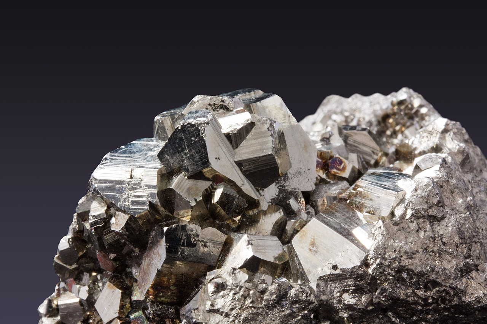

광산 확보 시대 끝났다, 허가증이 새 패권 무기

중국은 2023년 8월 갈륨·게르마늄 수출허가제를 시행한 이후 2024년 안티몬·초경질 합금, 2025년 흑연·희토류 가공품으로 통제 범위를 단계적으로 확대했다. 3년간 통제 품목 수는 7개에서 24개로 3.4배 늘었다.
갈륨의 경우 중국은 전 세계 정제 생산량의 약 98%를 담당하고 있다. 서방 국가들이 아프리카·남미에서 보크사이트·아연 광석을 확보해도, 갈륨 정제 기술과 설비가 없으면 원석 상태로 묶이게 된다. 중국은 정제 단계를 통제해 광산 보유 여부를 무력화한다.
희토류의 경우도 마찬가지다. 호주 MP Materials·미국 Lynas는 채굴은 가능하지만, 분리·정제의 60% 이상이 여전히 중국 산둥성·강시성 설비에 의존한다. 광산 개발에 5~7년, 정제 설비 구축에 추가 3~5년이 필요해 단기 대응이 구조적으로 불가능하다.
한국은 연간 핵심광물 수입 총액이 약 4조 5,000억원(2024년 기준)이며 이 중 중국 의존도가 60% 이상인 품목이 갈륨·게르마늄·텅스텐·안티몬 등 12개에 달한다. 수출허가 심사 강화로 인한 납기 지연은 이미 평균 8~14주 수준으로 고착화됐다.
자원 안보의 패러다임이 '채굴권 확보'에서 '정제·변환 역량 내재화'로 근본 전환됐다. 광산 투자 ROI 계산식에 이제 '정제 의존 리스크 프리미엄'을 반드시 추가해야 한다. 광산 지분 10%를 가진 나라가 아니라, 정제 라인 1개를 가진 나라가 공급망의 실질 주권을 갖는다.
한국 정부의 해외 광산 투자 정책(광물자원공사 중심)은 이 새로운 현실에 맞게 재설계돼야 한다. 광산 지분 취득보다 정제 기술 R&D·합작 설비 투자에 예산을 재배분하는 방향이 더 실효적이다. 2025년 산업부 소부장 1,700억원 예산 중 핵심광물 정제 설비 관련 비중은 약 15%로 추정되며, 이를 30% 이상으로 확대할 필요가 있다.
정제·분리 기술을 내재화한 기업과 국가가 새 패권 구조의 수혜자다. 미국 MP Materials(희토류 정제 내재화 추진), 독일 Heraeus(귀금속 정제), 일본 JX금속(구리·갈륨 정제)이 이 흐름을 선점하고 있다.
고려아연은 갈륨 정제 설비를 국내에 구축하는 유일한 사례로, 2028년 연 15.5t 생산이 가시화될 경우 '정제 자립' 기업으로 프리미엄 재평가가 가능하다. 현재 한국 갈륨 수요 40~50t 대비 30~40% 내재화 첫 단계다.
광산 지분 확보에만 집중하고 정제 설비 투자를 미룬 자원개발 펀드와 공기업은 전략 오류의 대가를 치르게 된다. 한국광물자원공사가 2010~2020년 투자한 해외 광산 자산 중 상당수가 중국 정제 의존 구조를 탈피하지 못한 상태다.
광산 개발 전문 EPC 업체들은 프로젝트 발주 감소 리스크에 노출된다. 신규 광산 투자 판단이 '정제 역량 확보 여부'에 종속되면서 채굴 단계 프로젝트 자체가 보류되는 사례가 늘고 있다.
기업 구매팀은 소재별 공급망 지도를 '광산→정제→가공→납품' 4단계로 재작성해야 한다. 각 단계의 국별 의존도를 수치화하고, 중국 통과 단계가 있는 품목을 우선 대체 전략 대상으로 분류하라.
정부 보조금·투자세액공제를 광산 지분 취득이 아닌 국내 정제·분리 설비 구축에 집중 신청하는 전략을 검토하라. 현행 소부장 특별법은 정제 설비도 지원 대상에 포함되나 실제 신청 비중은 낮다.
중장기적으로 유럽 CRM Act(핵심원자재법) 인증을 목표로 정제 공정 투명성 문서화를 지금부터 준비해야 한다. EU는 2030년까지 역외 단일국 의존도 65% 이하 규정을 강제할 예정이며, 인증 기업에 조달 우선권이 부여된다.
실제 조달 현장에서는 — 공급사가 '광산 직계약'이라고 홍보해도 정제는 중국 업체를 경유하는 경우가 빈번하다. 계약서에 정제 단계 원산지 증명서(Certificate of Origin for refining process)를 별도로 요구하는 조항을 추가하는 것이 이제 표준 관행이 돼야 한다.
이 포스팅은 쿠팡 파트너스 활동의 일환으로 수수료를 제공받습니다.